Overview
Healthcare's own visual identity — built from the ground up
Careers in Care is the flagship healthcare campaign within Indeed's Category system, targeting nurses and other healthcare workers — one of the most supply-constrained job categories on the platform. The goal: make healthcare workers feel genuinely seen by a brand that's usually associated with desk jobs.
I designed the Careers in Care brand identity, the event environment, and the earned media assets for both the 2023 and 2024 editions — and extended it into the "Off the Clock" event experience in 2025.
Art Direction
An original photoshoot built around real healthcare workers
I helped to art direct the Careers in Care photoshoot — building the set design concept and directing the full session to produce owned photography that could anchor the campaign across every channel. No stock imagery: just real healthcare workers, a considered set, and a creative brief designed to feel human and specific rather than generic "healthcare."
The resulting library became the visual backbone for social, paid display, email, and out-of-home executions throughout the year.
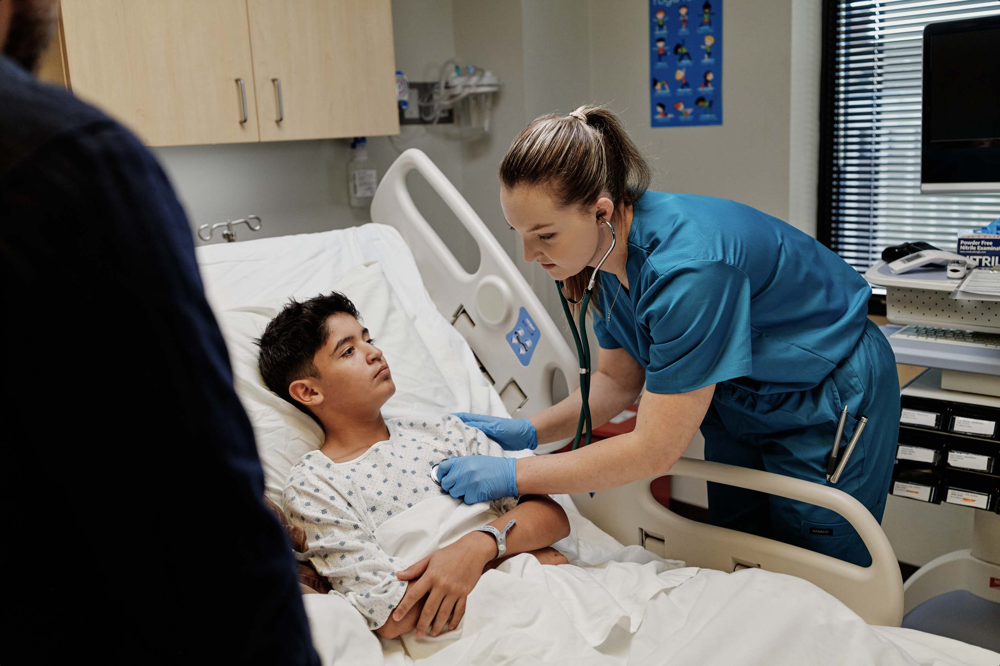

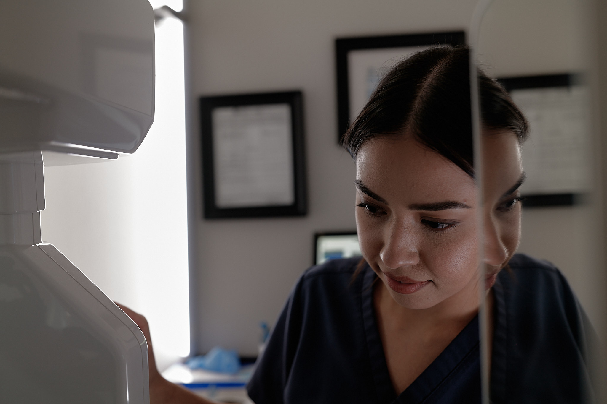
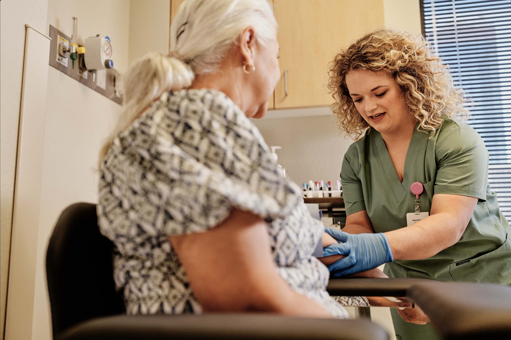
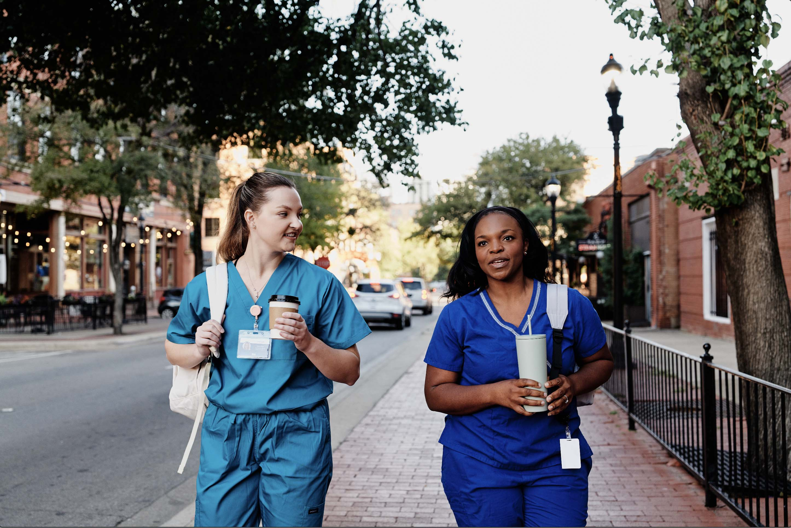
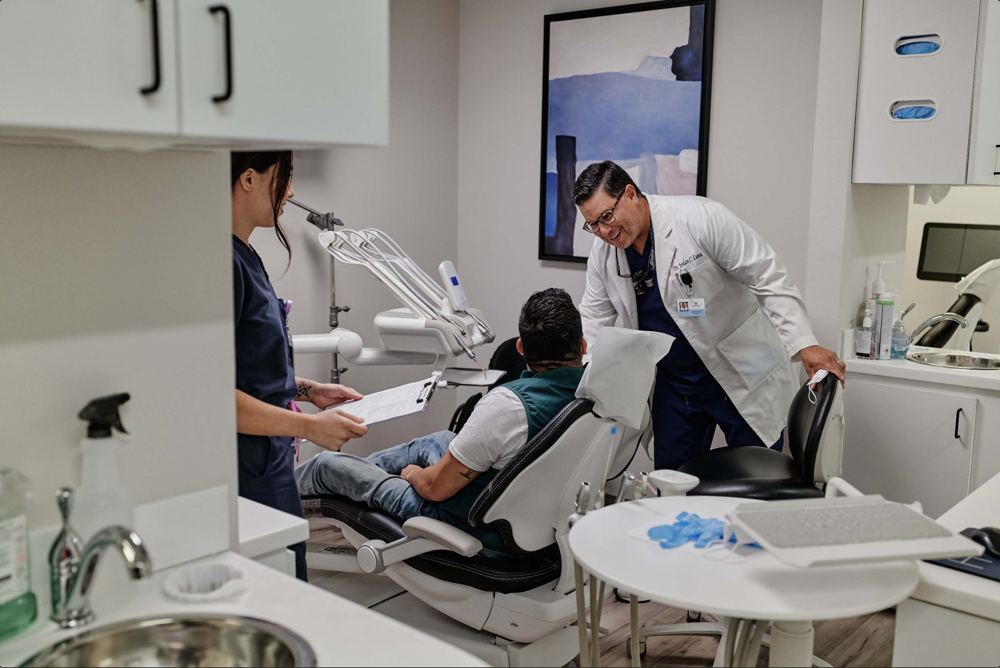
Original photoshoot art directed across four sets in Dallas, TX
The Work
Social, display, print, and a tailored landing page
The Careers in Care campaign ran across social and paid display, anchored by the owned photography from the shoot. It extended into a full-page feature ad in American Dental Association trade magazine — one of the few placements reaching dental professionals directly — and a dedicated landing page on Indeed connecting healthcare workers with job search resources tailored to them.
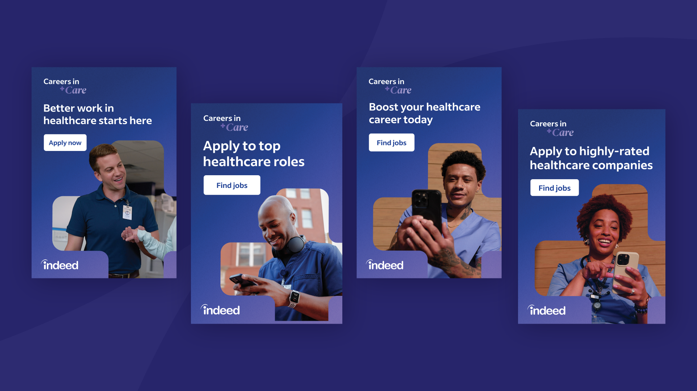
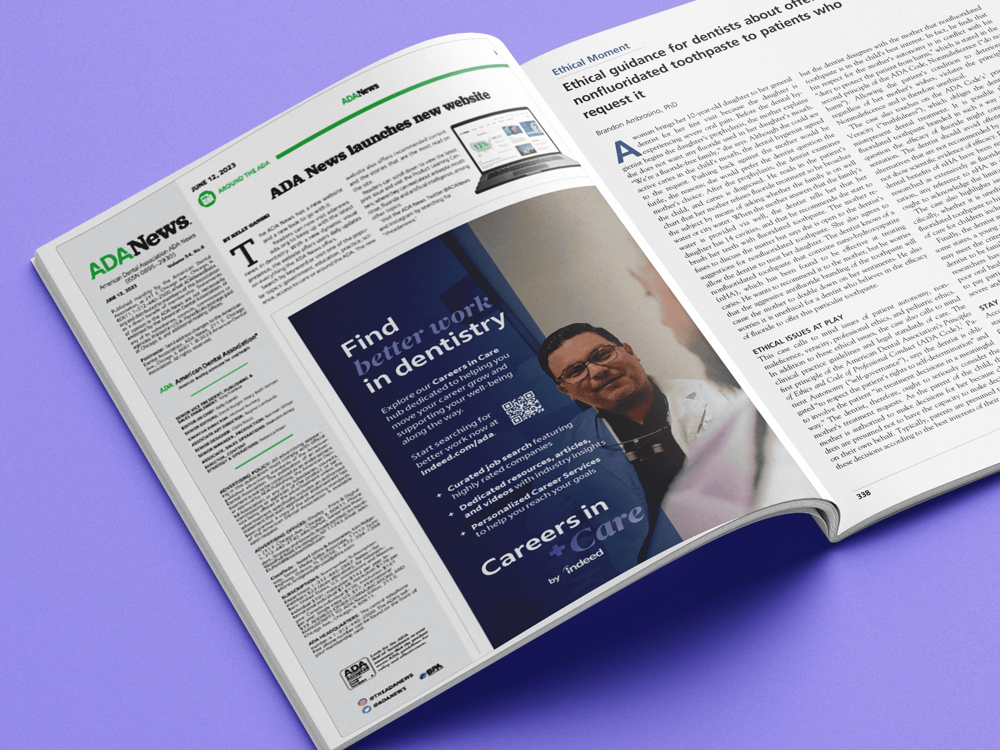
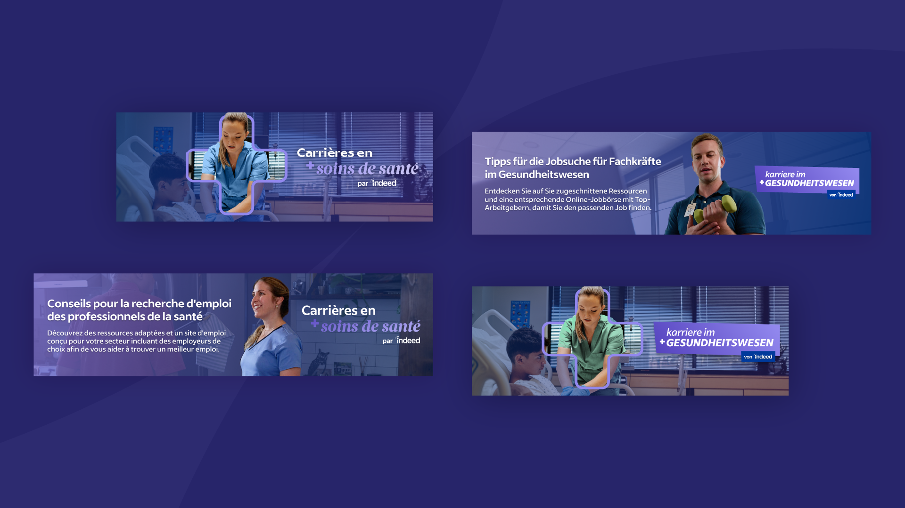
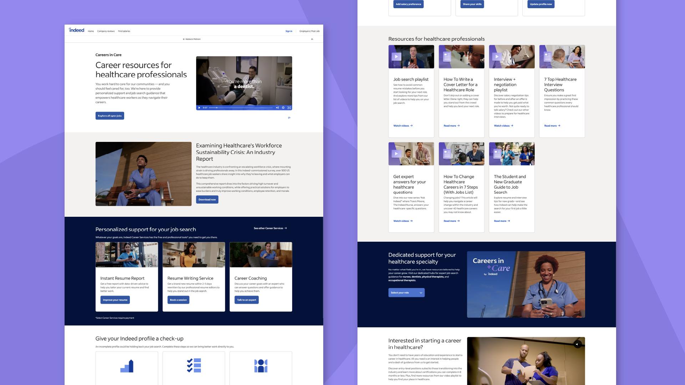
2024 Extension
Game On — a new concept within the system
In 2024, the Careers in Care system expanded with Game On! — a YouTube video series for Indeed's channel. I designed the logo and title treatment, art directed the set design across three episodes, created artwork for the motion graphics, and designed the YouTube thumbnails. Watch the Game On playlist →
2025 — Off the Clock
Event branding for healthcare workers: a night out, not a conference
"Off the Clock" was the 2025 Careers in Care event — a brand experience for healthcare workers to connect, celebrate, and recharge outside of work. I developed the full event identity from the ground up. What followed was one of the most valuable lessons of the project.
Version 1
Initial direction: approved, spec'd, and already with the vendor
The first identity leaned into a bold, high-contrast, on-and-off toggle aesthetic — clean geometry, dark palette, confident type. It was approved internally, vendor specs were sent, and production was underway. Then a key stakeholder who hadn't been part of the original review loop saw it and immediately flagged that it read as a tech industry party, not a healthcare event. And, you know what? They were right.
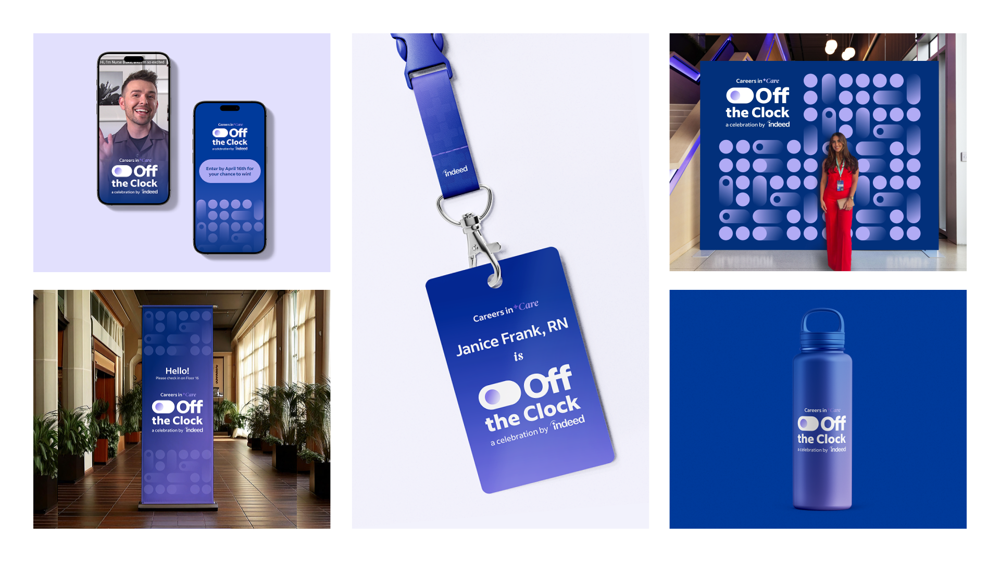
This is what design actually looks like: catching something before it ships, taking the feedback seriously, and rebuilding fast. We had a tight window before final print deadlines. We used it.
Version 2
The rebrand: warm, approachable, unmistakably healthcare
The revised identity shifted toward warmth, approachability, and the human side of care — softer color treatment, more inviting typography, imagery language that felt celebratory rather than corporate-cool. Healthcare workers weren't supposed to feel like they'd walked into a Google event. They were supposed to feel seen.
V2 went to production, made it to the event, and landed exactly as intended.
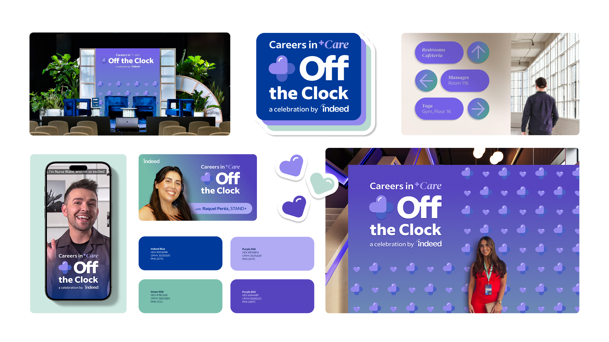
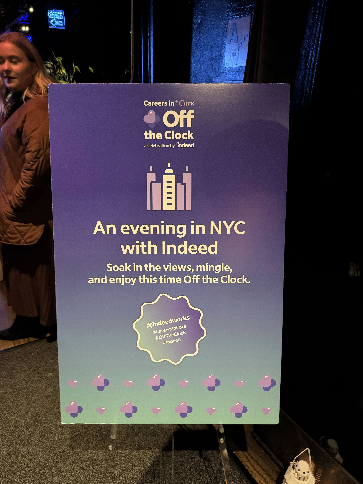
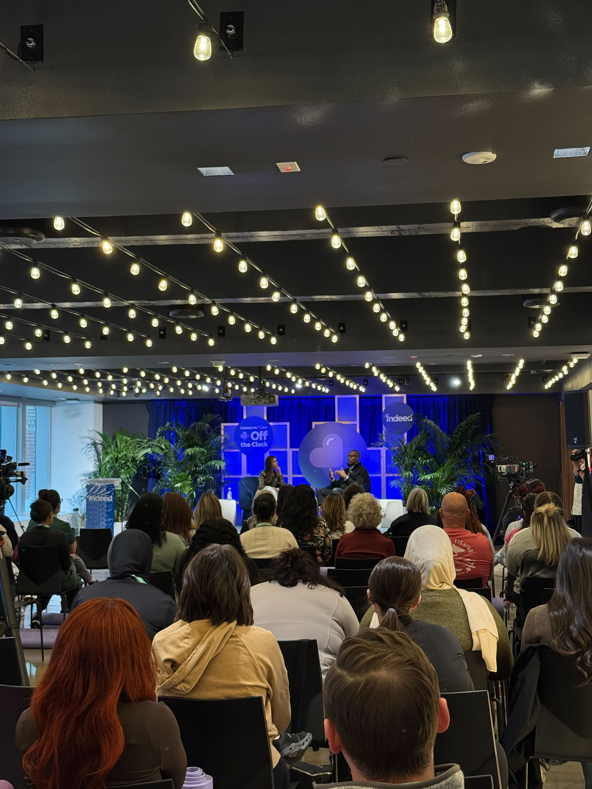